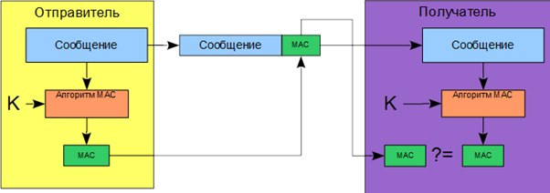
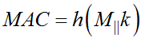
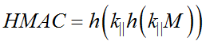
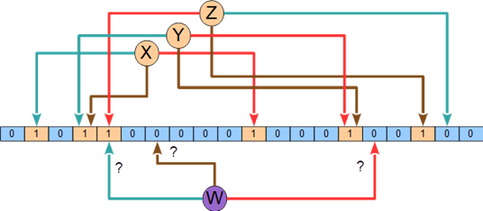
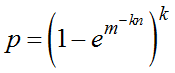

4.3.4. Использование хэш функций при решении практических задач
4.3.4. Использование хэш функций при решении практических задач
Проверка подлинности сообщения
Коды проверки подлинности сообщения (MAC или имитовставка) обладают теми же свойствами, что и хэш функции, но при этом зависят от секретного ключа. Схема применения MAC кодов представлена на рис. 4.27. Коды проверки подлинности сообщения могут использоваться для проверки целостности и авторства сообщения. Для этого отправитель вычисляет MAC код сообщения и присоединяет его к сообщению, при этом сообщение может быть как открытым, так и зашифрованным. На приемной стороне получатель также вычисляет MAC код сообщения и сравнивает полученный код и вычисленный. Если они совпадают, значит сообщение не было модифицировано и получено от легального абонента − владельца секретного ключа.
 |
Рис. 4.27. Схема проверки подлинности сообщения |
Если злоумышленник попытается подменить сообщение, то он не сможет сформировать верный MAC из-за отсутствия правильного ключа и его сообщение будет отвергнуто получателем. Эта схема требует наличия общего секретного ключа у отправителя и получателя.
Простейшим способом генерации MAC является:
,
где h − хэш-функция, k − секретный ключ, M − сообщение.
Другим, более стойким способом является алгоритм HMAC:.
Выполнение ЭЦП
Так как ЭЦП является функцией сообщения, то она должна зависеть от всех бит подписываемого текста. Так как ЭЦП применяется для блоков данных размера не больше заданного, то пришлось бы подписывать каждую часть сообщения отдельно, при этом длина ЭЦП была бы сравнимой с длиной сообщения, а время подписи зависело бы линейно от объема данных. Использование хэш-функции позволяет упростить реализацию ЭЦП, которая вычисляется не от самого сообщения, а от его хэша. При этом ЭЦП будет зависеть от всех бит сообщения, но будет иметь небольшую длину и вычисляться значительно быстрее. Очевидно, что если хэш-функция будет взломана, то будет взломана и ЭЦП его использующая, поэтому хэш функция является исключительно важным криптографическим примитивом.
Проверка ключей
Одной из важных областей применения хэш-функций является безопасная проверка паролей пользователя. Если пароли пользователей хранятся в базе данных, то при хищении базы данных злоумышленник получает доступ к данным всех пользователей. Альтернативой этому способу является хранение паролей пользователей в форме хэш-функции от пароля (ключа). При первом вводе ключа перед его использованием вычисляется значение хэш-функции от этого ключа и сохраняется в открытом виде в базе данных. При последующем вводе ключа, перед его использованием повторно, вычисляется значение хэш-функции и сравнивается с уже сохраненным значением. При их несовпадении делается вывод о неверности введенного ключа. Это позволяет защитить систему в случае хищения базы с паролями, так как в этом случае вместо паролей злоумышленник получит хэши, а подобрать какой-нибудь пароль из базы хэшей практически невозможно на практике при условии использования хорошей хэш-функции и качественного пароля или парольной фразы. Злоумышленник может составить базу данных хэшей от наиболее употребительных паролей и искать совпадения с базой паролей пользователей. Для защиты от этого используются так называемые "подсоленые" пароли, т. е. которые состоят из пароля пользователя и присоединенной к нему случайной строки длиной 16 байт. От итогового пароля вычисляется хэш для хранения в базе данных паролей, причем случайная строка хранится вместе с хэш-значением. В этом случае злоумышленнику придется составлять всю базу для каждого пароля, что не имеет смысла.
Компактное хранение некоторого множества
Для хранения данных о том, какие элементы присутствуют в множестве без раскрытия этих элементов может использоваться алгоритм, основанный на использовании хэш-функций и называемый "фильтр Блума". Фильтр Блума − вероятностный метод хранения некоторого множества с возможностью определения принадлежности элементов к этому множеству. При этом есть вероятность ложноположительного срабатывания, не ложноотрицательного. Управлять вероятностью ложного срабатывания можно изменяя объем памяти, занимаемый алгоритмом, чем больше памяти, тем меньше вероятность ложного срабатывания. Хранилище − это битовый массив. Фильтр Блума определяется размером занимаемой памяти и набором независимых различных хэш-функций. Для добавления элемента в множество (файла, текстового сообщения, слова, IP-пакета) вычисляются хэш-функции от этого элемента и биты значения этих функций устанавливаются в 1 (рис. 4.28). Для проверки принадлежности элементов, вычисляются значения хэш-функций и проверяется, есть ли в хранилище единичные элементы на соответствующих позициях.
 |
Рис. 4.28. Пример фильтра Блума для хранилища 20 бит с тремя элементами и тремя хэш-функциями |
Вероятность ложного срабатывания равна:
,
где k – количество хэш-функций, m − размер хранилища в битах, n − количество элементов в хранилище. Оптимальное количество хэш-функций равно:
 .
.
Применение такого фильтра позволяет в ряде случаев сократить требуемый объем памяти на несколько порядков, используется для автоматического определения саморассылающихся вирусов в коммутаторах, проверки существования имен и паролей, проверки некоторого значения без публикации базы данных и т. д.